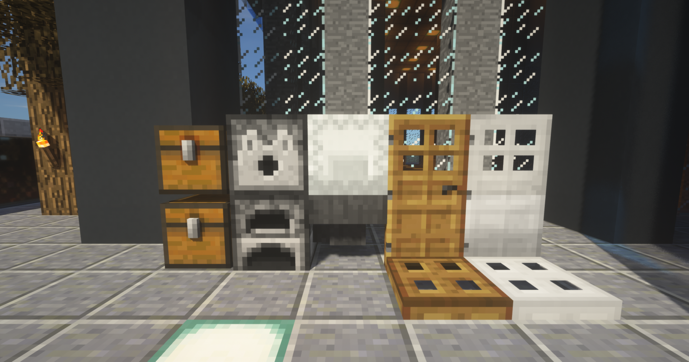
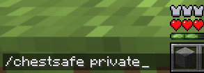
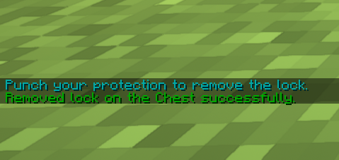
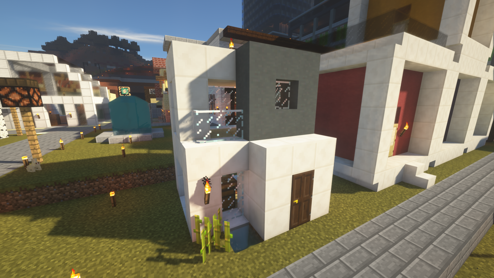
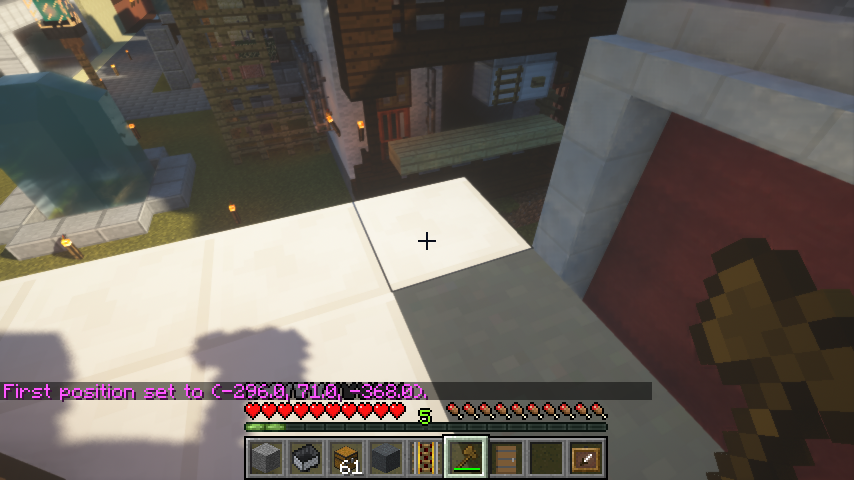
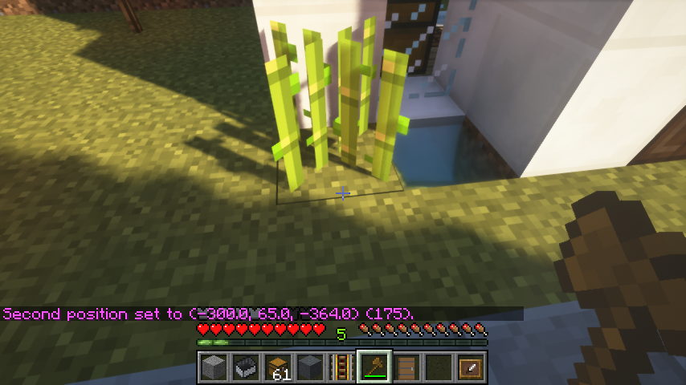
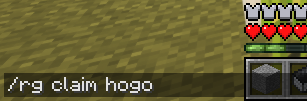
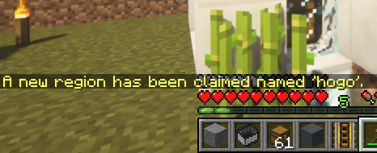
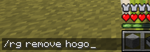

チェスト・ドア等の保護
ここではChestSafeプラグインを使用した保護について解説します。
アイテム盗難などを防ぐため貴重品には必ずご使用ください。
チェスト・シュルカーボックス・かまど・ドア・トラップドアなどゲーム内で機能を持ったあらゆるブロックに保護をかけることができます。
すべてのオプションにおいて他人が破壊できなくなります。自分以外使用できない設定や、使用だけならだれでも可能な設定など柔軟な設定が可能です。
ここでは、基礎的な保護/保護解除を画像付きで解説します。
/chestsafe [private|public] [プレイヤー名]
を使用したあと、保護したいブロックを左クリックします。
オプションは[private]と[Public]が選べます。
[private]では他人による破壊・使用両方ともできなくなります。
貴重品を保管するチェストなど、盗難防止用に使用すると良いでしょう。
ドアに適用すると他人が一切立ち入れなくなります。
[public]では他人による破壊ができなくなります。
チェストの中身を出せてしまうので保護には向きません。
一方で、ドアなどに適用すると誰でも使用は可能になるので公共施設などにおすすめです。
複数人で建築物を作っている場合など自分以外のユーザーを許可したい場合はコマンドの最後に許可するユーザー名を記述します。
例として、「破壊は禁止、誰でも使用可能、プレイヤー"example"さんも編集できる」の場合
/chestsafe public example
となります。
/chestsafe remove
を使用したあと、解除したいブロックを左クリックします。
なお、保護中のブロックを自分で破壊した場合、自動的に解除されます。
追加するには /chestsafe member add [ユーザー名]
削除するには /chestsafe member remove [ユーザー名]
/chestsafe transfer [新しいユーザー名]を使用します。
一度所有権を移動すると元オーナー側では一切の操作ができなくなるので注意が必要です。
詳しい情報はデベロッパーの公式ページをごらんください。
アイテム盗難などを防ぐため貴重品には必ずご使用ください。
保護できるもの

チェスト・シュルカーボックス・かまど・ドア・トラップドアなどゲーム内で機能を持ったあらゆるブロックに保護をかけることができます。
すべてのオプションにおいて他人が破壊できなくなります。自分以外使用できない設定や、使用だけならだれでも可能な設定など柔軟な設定が可能です。
保護コマンドの使用方法
ここでは、基礎的な保護/保護解除を画像付きで解説します。
保護コマンド
保護を行うには/chestsafe [private|public] [プレイヤー名]
を使用したあと、保護したいブロックを左クリックします。

オプションは[private]と[Public]が選べます。
[private]では他人による破壊・使用両方ともできなくなります。
貴重品を保管するチェストなど、盗難防止用に使用すると良いでしょう。
ドアに適用すると他人が一切立ち入れなくなります。
[public]では他人による破壊ができなくなります。
チェストの中身を出せてしまうので保護には向きません。
一方で、ドアなどに適用すると誰でも使用は可能になるので公共施設などにおすすめです。
複数人で建築物を作っている場合など自分以外のユーザーを許可したい場合はコマンドの最後に許可するユーザー名を記述します。
例として、「破壊は禁止、誰でも使用可能、プレイヤー"example"さんも編集できる」の場合
/chestsafe public example
となります。
保護解除コマンド
保護を解除するには/chestsafe remove
を使用したあと、解除したいブロックを左クリックします。

なお、保護中のブロックを自分で破壊した場合、自動的に解除されます。
メンバーを追加/削除
保護コマンドで紹介した他ユーザーの追加ですが、後から追加/削除も可能です。追加するには /chestsafe member add [ユーザー名]
削除するには /chestsafe member remove [ユーザー名]
所有権の譲渡
保護したブロックを他のユーザーに譲渡するには/chestsafe transfer [新しいユーザー名]を使用します。
一度所有権を移動すると元オーナー側では一切の操作ができなくなるので注意が必要です。
プラグインの詳細
詳しい情報はデベロッパーの公式ページをごらんください。
[WorldGuard] 建築物の保護
ここではChestSafeプラグインを使用した保護について解説します。
アイテム盗難などを防ぐため貴重品には必ずご使用ください。
ChestSafeでは機能を持ったブロック単体を保護しますが、家全体、敷地全体など大きな範囲を保護したい場合はこちらのWorldGuardをご利用ください。
今回は、画像の家を保護していきます。
ここでは、基礎的な保護/保護解除を画像付きで解説します。
木の斧を持って左クリックすると範囲選択の始点を指定できます。
指定したい場所に立って //pos1 コマンドでも同様に指定できます。
木の斧を持って右クリックすると範囲選択の終点を指定できます。
指定したい場所に立って //pos2 コマンドでも同様に指定できます。
この後、/rg claim [保護の名前] で保護は完了です。
[保護の名前]は他と被らないわかりやすい名前をつけることをおすすめします。
保護が成功するとこのようなメッセージが表示されます。お疲れ様でした。
/rg list -p [自分のユーザー名]を使用します。
追加するには /rg addmember [保護の名前] [追加したいユーザー名]
削除するには /rg removemember [保護の名前] [削除したいユーザー名]
詳しい情報はデベロッパーの公式ページをごらんください。
自分の資産をしっかり守って、安全に楽しくMinecraftライフを送りましょう！
保護していないブロック・アイテムが被害にあっても運営では救済することが出来ません。
また、チェストからの盗難、ブロックの破壊はたとえ適切に保護が行われていなくてもBANなど処罰の対象となります。ルールと利用規約の確認をお願いします。
アイテム盗難などを防ぐため貴重品には必ずご使用ください。
保護できるもの

ChestSafeでは機能を持ったブロック単体を保護しますが、家全体、敷地全体など大きな範囲を保護したい場合はこちらのWorldGuardをご利用ください。
今回は、画像の家を保護していきます。
保護コマンドの使用方法
ここでは、基礎的な保護/保護解除を画像付きで解説します。
保護コマンド
保護を行うには、まず木の斧を使って範囲選択をしていきます。

木の斧を持って左クリックすると範囲選択の始点を指定できます。
指定したい場所に立って //pos1 コマンドでも同様に指定できます。

木の斧を持って右クリックすると範囲選択の終点を指定できます。
指定したい場所に立って //pos2 コマンドでも同様に指定できます。
この後、/rg claim [保護の名前] で保護は完了です。

[保護の名前]は他と被らないわかりやすい名前をつけることをおすすめします。

保護が成功するとこのようなメッセージが表示されます。お疲れ様でした。
保護解除コマンド
保護を解除するには /rg remove [保護の名前] を使用します

保護の名前の確認
保護を解除したいけど名前を忘れてしまった！という場合は/rg list -p [自分のユーザー名]を使用します。
メンバーを追加/削除
WorldGuardでも他のユーザを管理者に招待できます。追加するには /rg addmember [保護の名前] [追加したいユーザー名]
削除するには /rg removemember [保護の名前] [削除したいユーザー名]
プラグインの詳細
詳しい情報はデベロッパーの公式ページをごらんください。
自分の資産をしっかり守って、安全に楽しくMinecraftライフを送りましょう！
保護していないブロック・アイテムが被害にあっても運営では救済することが出来ません。
また、チェストからの盗難、ブロックの破壊はたとえ適切に保護が行われていなくてもBANなど処罰の対象となります。ルールと利用規約の確認をお願いします。